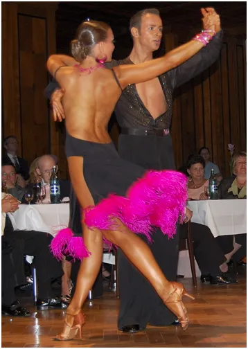
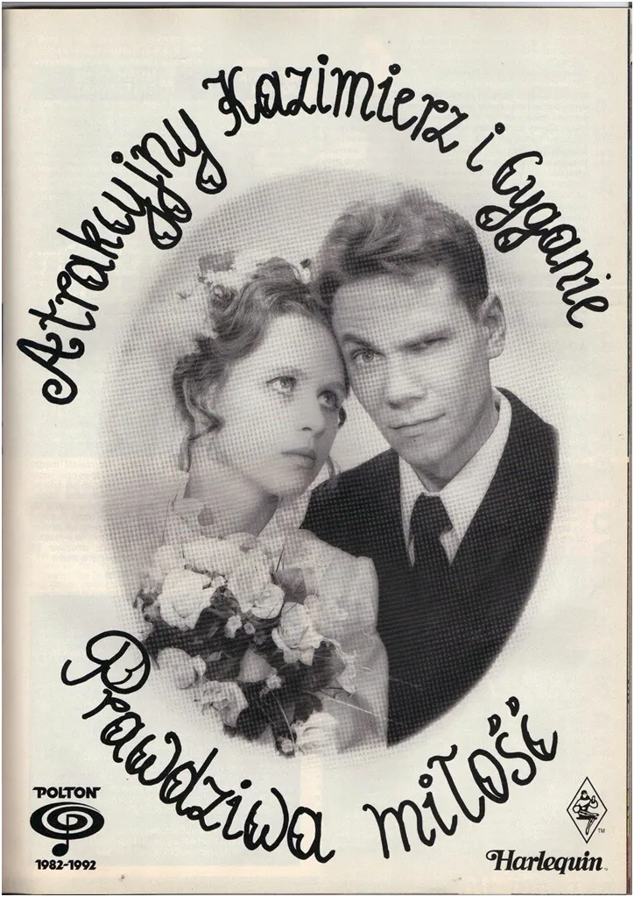
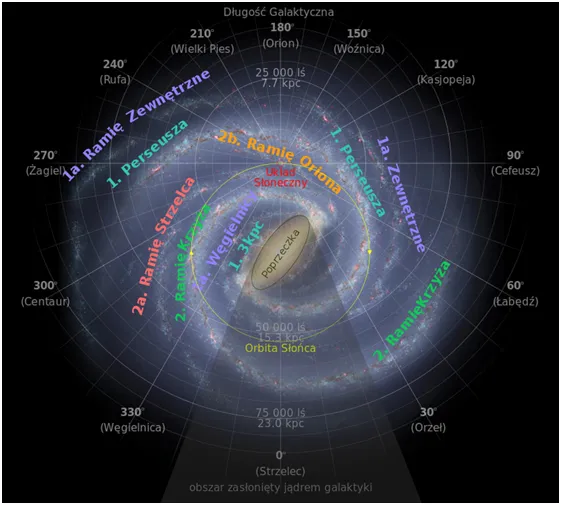
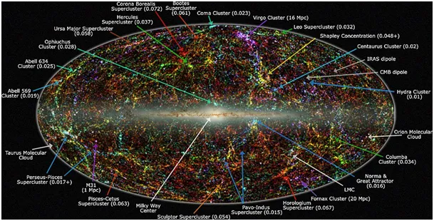
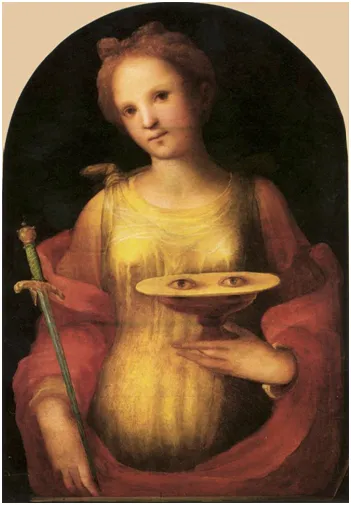

Wielki Atraktor to nie jest Atrakcyjny Kazimierz.
13 grudnia Łucji, dzień na półkuli północnej znamienny, to od dziś zachody Słońca będą już coraz później. Dzień będzie dłuższy po 22 grudnia, ale na skutek dodawania się obrotu wirowego Ziemi z jej obrotem wokół Słońca będziemy naszą gwiazdę tracić z oczu każdego dnia później, niestety jeszcze do Nowego Roku kosztem późniejszych poranków. To jak w tańcu, gdy wirujący tancerz obchodząc swą wybrankę za każdym razem traci z widzenia jej twarz troszkę później niż czas obrotu wokół własnej osi. Skoro w Kosmosie mamy taki zwrot akcji to spójrzmy w niebo.
Zajmujemy się różnymi głupstwami, które nas bardzo angażują, a gdy po latach spytać o nie to nie pamiętamy prawie nic. W połowie polskich domów były kasety z nagraniami "Atrakcyjnego Kazimierza" a dziś mało kto go pamięta. Tymczasem wokół nas dzieją się rzeczy niewyobrażalnie wielkie a my jak dzieci przyglądamy się temu niewiele rozumiejąc. bo "w Zakopanem polewamy się szampanem".

Od stulecia panuje "moda na naukę", wszyscy potrafimy czytać i pisać, a głupota rozprzestrzenia się z prędkością światła. Większość z nas jest przekonana, że znamy budowę drogi mlecznej, bo jej grafikę widzieliśmy setki razy w "poważnych pismach". Nic bardziej mylnego, na dziś nie wiadomo nawet ile ramion ma nasza galaktyka i szybko tego się nie dowiemy.

Znamy tylko przybliżoną, hipotetyczną strukturę Drogi Mlecznej z prostego powodu, że znajdując się w środku trudno zobaczyć całość. Oczywiście fizycy uwielbiają metody pośrednie i coś tam wiemy, ale tylko "coś". Ważnym odkryciem jest fakt, że Układ Słoneczny wcale nie wiruje z Galaktyką tylko mknie "na szagę", co ma olbrzymie konsekwencje w historii geologicznej Ziemi. Z tego to powodu Ziemia bywa bardzo zimną lub bardzo gorącą planetą, zależy to od natężenia promieniowania kosmicznego, które jest różne w różnych częściach Galaktyki i zasadniczo wpływa na atmosferę Ziemi. Publikacji o tym jest mnóstwo, wiele poważnych prac naukowych, ale skoro fakty przeczą "klimatyzmowi" tym gorzej dla faktów, mówią fanatycy ze szkodą dla siebie i innych.

Gdy my tu sobie kwadrans to rozważamy to cała nasza Galaktyka z kilkuset miliardami gwiazd, znów niewiadoma liczba szacowana na przedział 100-400 miliardów, przeleciała 1/4 miliona kilometrów przyciągana grawitacyjnie przez Wielki Atraktor o masie 5 × 10^15 Słońc. Wielki Atraktor to skupisko gromad galaktyk, czyli coś tak potężnego, że ludzka wyobraźnia nawet nie może zacząć ogarniać tego fenomenu.

Kosmos to dynamiczna struktura, nasze cykliczne cztery pory roku i pozorna stałość świata to wspaniałe złudzenie, wielki dar jaki mamy. Nigdy już nie będzie tak jak było, to jedyne, co jest stałe. Ludzka wiedza jest potężna, ale masowa ignorancja jest od niej potężniejsza, co nie zwalnia nas od stałego poznawania cudów świata, bo do tego jesteśmy powołani.
Paweł Klimczewski